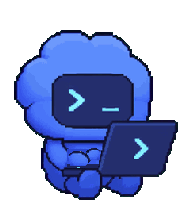

FIND YOUR CODING COMPANION
Your next coding companion.
Preview your pets, choose a scene, or bring a character from your own image.
YOUR COMPANIONS
Your pets
Preview stays local. For Discord, download the hosting files, upload the extracted GIFs to GitHub or another HTTPS host, then paste the folder URL. Keep the filenames unchanged.
Connecting to your local pet library…

Playing · seamless loopCANONICAL STATE
Writing
Stationary head and laptop with alternating articulated paw presses on the keyboard
- Frame rate
- 20 fps
- Loop length
- 3.2s
- Suggested state
- writing


Use this URL in your Codex Pet asset settings.
THE COLLECTION
Choose a scene
Live states
The familiar lifecycle, with a little more life.
Extra scenes
Fresh loops for reading, building, debugging, and everything in between.
No scenes match. Try another mood or clear your search.
YOUR IMAGE, BROUGHT TO LIFE
Create from an image
Attach your character image in ChatGPT, then paste this prompt. It describes every animation state while preserving your character’s identity and visual style. Bring the finished PNG back here to import it.
This preview stays on your computer. Attach the image yourself in ChatGPT.
The attached image defines the character. Leave this blank to follow it faithfully.
Download the 8 × 7 layout guide ↗ONE IMAGE IN. ONE SHEET OUT.
- Attach your character image in ChatGPT.
- Paste the complete prompt below and generate the transparent PNG.
- Drop that PNG into the importer and preview its states.
- Choose it for Discord when its GIFs are publicly hosted.
The importer reads every frame. Typing comes from the character’s actual hand poses, without a blue-pet-specific hand sampler.
Only the grid guide is optional. Your character reference is required in ChatGPT.
Attach your character image in ChatGPT, then paste this prompt.
Image generation can miss a grid or change a face. Preview every imported state before using it. Pet Studio never uploads your image or sends a prompt to ChatGPT.
WELCOME YOUR NEW PET
Import a pet
Import one generated PNG sheet, a collection of state-named GIFs, or an exported .pet.json pack. Your original files and the bundled pets stay intact.
No files selected. PNG/GIF files: up to 10 MB each, 48 MB total. Exported packs: up to 64 MB.
Run codex-rpc serve to enable local imports.
PNG rows are idle, thinking, waiting, writing, patching, error and done. GIF names can use these states or names such as coding, sleeping and success. Related extra states reuse the closest supplied animation. Importing does not change your live Discord pet until you choose Use on Discord.
About this little pet
The original blue Codex Pet artwork is preserved. Motion and surrounding pixel effects are authored for codex-rpc. Static previews retain the source pixels; GIF colors use an indexed palette.
View source provenance and animation metadata ↗Open the motion contact sheet ↗